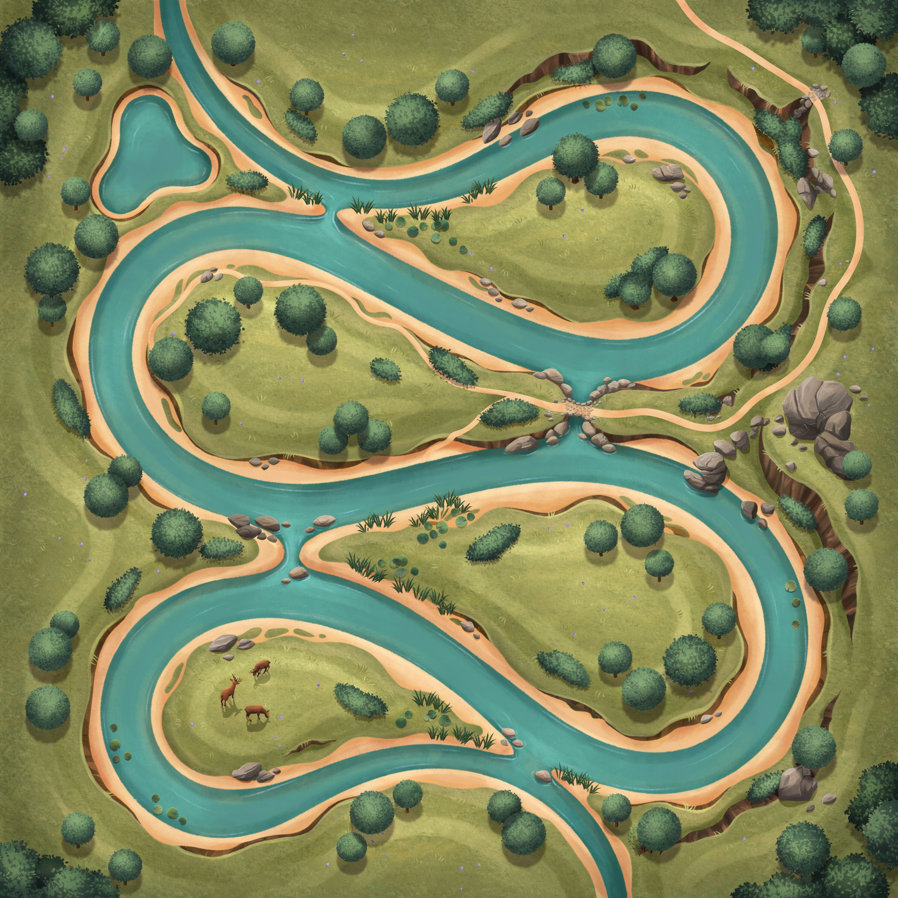
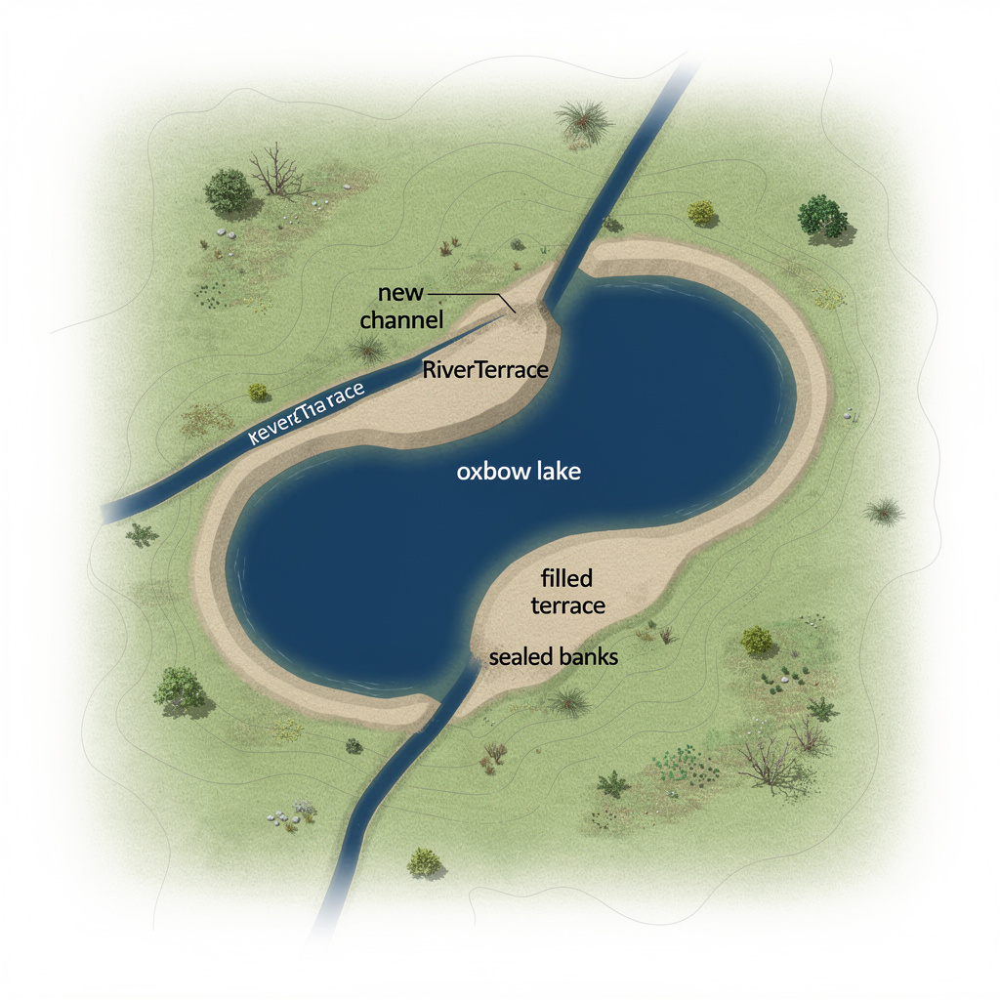
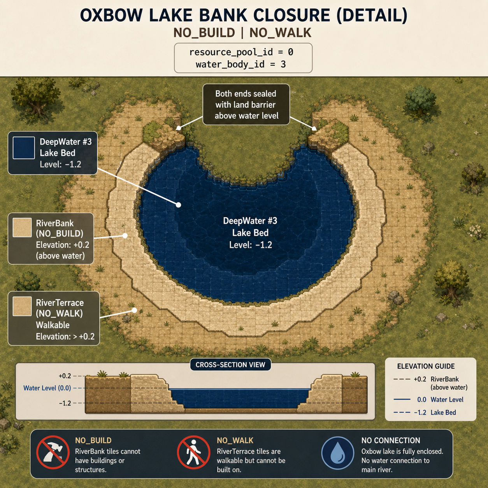
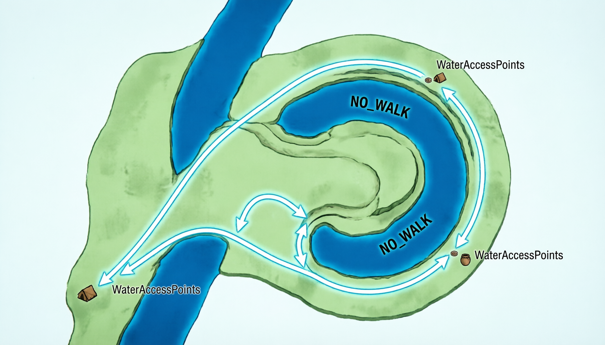

已交付 v1.54.0 生成器 16→17 前置 R0-4 已完成
RiverCenterline::meander_windows() 诊断曲折率 L_chord/L_arc ≤0.71、弯颈 0.5·half ≤ neck ≤3·half、摆幅 ≥4·half，额外过滤浅滩走廊 crossingWidth+30m、取水点 interaction_radius+8m、图缘 40m、弯顶在窗内（max |x| 非端点）、弦内部可开挖（新河道扫掠带净距）i..j 替换为弦，端点严格保留 C0 连续，新中心线重算累计弧长RiverTerrace（淤积端），剩余 75% 为月牙湖 DeepWater#3（water_body_id=Some(3)，resource_pool_id=0，NO_BUILD|NO_WALK）RiverBank|NO_BUILD，不创建 TerrainConnectionDeepWater#1/RiverBank/RiverTerrace，更新 River#1/RiverBank#20/21 轮廓；牛轭湖轮廓 WaterBody id=216 与水体 #3 双副本逐字节一致
// MeanderWindow 增加 i,j 索引
pub struct MeanderWindow {
pub i: usize, pub j: usize,
pub s0: f32, pub s1: f32,
pub arc_length: f32, pub chord_length: f32,
...
}
// OxbowLake 注入器
pub(super) fn apply_oxbow_lake(
baseline: &TerrainMap,
candidate: &mut TerrainMap,
scratch: &mut GenesisScratch,
plan: &mut PlannedSubFeature,
) -> Result<bool, &'static str> {
// 1. 过滤窗口：边界40m、浅滩、取水点、弯顶在内、弦可开挖
// 2. 确定性选窗：mix64(seed ^ salt ^ 0x4F58_424C_4C41_4B45) % len
// 3. 新中心线：points[0..=i] + points[j] + points[j+1..]
// 4. 地形改写：AABB内逐格算 old/new 距离与 s，t=(s_old-s0)/arc
// 新河道优先 DeepWater#1 / RiverBank / RiverTerrace
// 旧河道 t<0.25 → RiverTerrace 回填
// 旧河道 t≥0.25 → DeepWater#3 湖 + RiverBank 岸
// 5. 连通性预检：count_walkable_components
// 6. 轮廓重派生：主河 193点采样 left/right → outline
// 湖 24点采样旧弯道 left/right → 闭合 outline
// 7. 水体与特征：id1 更新，id3/216 新增，双副本一致
// 8. 子特征：id=1004，anchor=湖心均值，bounds=AABB，feature_ids=[216]
}
match plan[i].kind {
RiverCliff => apply_river_cliff,
OxbowLake => apply_oxbow_lake, // 新增
_ => empty
}
// 2↔116 / 3↔216 映射
let feat_opt = if wb.id==2 { find 116 }
else if wb.id==3 { find 216 }
else { find wb.id };
if wb.id==2||wb.id==3 {
assert kind==WaterBody
}
TERRAIN_GENERATOR_VERSION 16→17 v1.53.x 16→17 说明
TERRAIN_GENERATOR_VERSION 16 → 17，仅 T2 命中 OxbowLake 的种子地形变化，其余 profile 逐位不变WaterBody#3（resource_pool_id=0 不可采水）、TerrainFeature#216（WaterBody）、TerrainSubFeature#1004（OxbowLake）以下为牛轭湖形成过程的示意渲染（AI 生成地形示意，4 张已全部生成选定；受限环境 WASM 未编译，待 Chrome 实机 Canvas 截图补测。本地门禁 config-check.js / frontend-check.js 已全绿，Rust 工具链缺失故 cargo test 未执行）：

三回环 meander train，主河半宽 ~14m，弯道曲折率 ≥1.4，弯颈宽度 0.5·half~3·half，摆幅 ≥4·half，窗口 20 点约 60m，满足 §6.3 几何量

新河道走直道弦（C0连续），旧弯道上游25%回填 RiverTerrace（淤积端，提供陆路连接，防孤岛），剩余75%为月牙形 DeepWater#3，两端以 RiverBank 高于水位封口，不产生跨河授权

湖岸环：DeepWater#3（湖床 level-1.2，NO_BUILD|NO_WALK）→ 内环 RiverBank|NO_BUILD → 外环 RiverTerrace 可建；封口岸沿高于水面 +0.2m，整圈高于水面，无漫水；湖不计入 HUD 水库存（resource_pool_id=0）

施加后可行走连通分量数不增加（基线/候选独立洪泛），每个 WaterAccessPoint 仍可达营地；取水点位置未移动（选址时避开 interaction_radius+8m）；浅滩授权走廊完整保留，仅主河改道
cargo test / test-wasm.js / terrain_probe 实机矩阵，待本地补测 60 种子：maxSlope、NO_WALK、buildable、components、detour、crossing、水源距drawWaterBodyTile，无需新增分支；S4-X4 牛轭湖岸专属景观待注入器落地后另行交付（纯表现层）生成时间：2026-09-23 · 分支 arena/01a0ca02-flowandaccord · 版本 v1.54.0 · 生成器 17